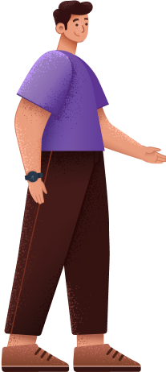
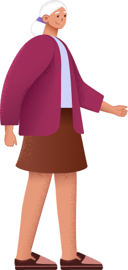
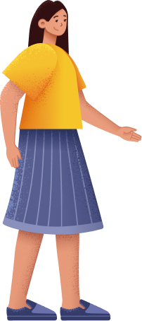

Migrant Domestic Worker eService
Empowering family members to perform work permit transactions on behalf of aged employers
Context
At the Ministry of Manpower (MOM), employers of MDWs use the eService to perform transactions for their workers.
My team developed a new feature for family members to transact on behalf of non tech-savvy, aged employers. I was 1 of 2 main designers.
My responsibilities:
As 1 of 2 main designers, I led interaction design, UI, and user flows end-to-end — redesigning the legacy system, running research to validate hypotheses, defining terminology and tone, and pushing the most efficient user pathways through to senior stakeholders.
The problem
Family members (FMs) of aged employers tend to help the latter with transactions such as renewing the worker's permit. Problems have surfaced — such as transacting under false IDs and employers unable to give consent. The MOM business team also needed to simplify the process to transact on behalf.
The outcome
An end-to-end, seamless experience for family members to perform transactions for aged employers.
Family members login to their own account and request to transact on behalf of an employer
Their request is verified and approved by a MOM officer.

After which, they would be able to do transactions for the employer.
This way, transactions done by the family member can be traced back to their own account. The employer is also able to give permission to family members.

An improved homepage and navigation
- A consolidated dashboard with helpful next steps and relevant information
- Users can see all workers they are managing at one glance
- Clear and intuitive navigation
After redesign

Before redesign

Here's how I got there
Click a box to jump to the section.
Taking stock
I spoke to business stakeholders to gain a clearer understanding of the project. I discovered that:
- In response to Singapore's aging population, MOM wanted to enlist the help of family members to manage online transactions
- Currently, family members transact for the employer using the employers' SingPass (national digital identity). There are legal risks with this since family members are not using their own IDs
- MOM needed to track which family member was helping which employer
Here's how a typical scenario plays out

John, 45 (son)
- Lives apart from Grandma Ann
- Helps her for all issues related to Lina
- E.g. renewing Lina's work permit, registering her for medical examinations

Grandma Ann, 82 (aged employer)
- Not tech-savvy
- Lives with Lina
- Depends on John for helper related matters

Lina, 39 (domestic worker)
- Provides day-to-day care for Grandma Ann
I then reviewed existing designs done by predecessors
The existing designs needed cleaning up, so we tested each flow to surface usability and process issues. For example, I removed the flow letting employers assign family members themselves — aged, non-tech-savvy employers couldn't realistically log in to do that.

Research overview
We decided to conduct moderated user testing on 6 participants, who had all transacted for aged employers before. The research objectives were:
- To identify gaps in this new Transact on Behalf process
- To test ease of use of possible flows
Streamlining the existing flows for testing
The following use cases were tested:
- Grandma Ann assigning John to transact on her behalf and John accepting the assignment
- John requesting to transact on behalf
- John switching to Grandma Ann's profile to transact for her
- Terminating John's own access to transact on behalf
- A Sponsor assigning another FM to transact on behalf of the employer
Research revealed that 'Transact on behalf' was a new concept to users, and they had difficulty completing the tasks
Here were some key research insights:


Streamlining the existing flows for the MVP
- Grandma Ann assigning John to transact on behalf of her and John accepting the assignment
- John requesting to transact on behalf
- John switching to Grandma Ann's profile to transact for her
- Terminating John's own access to transact on behalf
- A Sponsor assigning another FM to transact on behalf of the employer
Point 1 confirmed our initial hypothesis that aged employers should not be going online. Instead, FMs should request to transact for them. Point 3's concept of switching profiles was redesigned, more on that below. To simplify the scope, Point 5 was removed.
The user journey
View the full prototype →1. Firstly, FMs like John need to request to transact on behalf from their own account
John clicks on the 'Request to transact' dropdown as shown on the left image. From the research insights, I improved the top navigation and discoverability of the feature.
✅ After design improvement
- Removed 'Manage Helpers'
- 'Transact for a Family Member' label has only 2 dropdown options
- No need for dashboard, the options go straight to the transactions

❌ Before design improvement
- 'Home' and 'Manage Helpers' lead to the same page
- Users could not relate 'Family Member Permissions' to transacting for others
- Cluttered dashboard with multiple call-to-actions

2. Next, he fills up the Request to Transact form and uploads the consent form signed by Grandma Ann
This consent form authorises John to transact for her. Below is John's high level user flow.

3. After a MOM officer approves his request, he can start transacting for Grandma Ann!
John can see both his worker's and Lina's details at one glance. Lina's pass is expiring soon and he clicks on 'Renew work permit.' Then, he fills up the 'Renew' form right away.
During user testing, users struggled with switching to the employer's profile to transact for them. Thus, we redesigned the homepage with all worker cards in one page. This way, transacting on behalf aligned with users' mental model.
✅ After design improvement
- No need to switch to Grandma Ann's profile
- Took this opportunity to ideate and redesign the homepage beyond the 'Transact on Behalf' module

❌ Before design improvement
- Homepage was confusing with unnecessary cards, links and buttons
- Switch profile link is not prominent
- Users did not understand why they still needed to switch even after they are approved to transact

4. If John wants to stop transacting for Grandma Ann
He clicks on 'Stop transacting' in the top nav. Users fed back that aged employers might still need help, so I added a reminder in the last screen to get another person to transact for them.

Working around legacy systems
The eService had many design constraints and inconsistencies. We had to push the limits of creativity within restricted boundaries. For example, I recommended clickable progress bars to break down forms into easier steps. However, there was pushback as all forms would have to be changed. Thus, I took advantage of this Transact on Behalf feature to introduce a modified, static version of it. I also used this opportunity to introduce a summary page to edit and view data.
Proposed progress bar

Implemented progress bar

Designing for non tech-savvy users
As more services move online, the elderly and non-tech savvy are alienated.
For example, we provided a physical consent form that allowed elderly employers to give consent for FMs to transact for them. FMs would then upload it online for a MOM officer to verify. This way, we also thought holistically for all customer touchpoints, needs and constraints.
Physical consent form signed by elderly employer

FM uploads the form when requesting to transact on behalf

Many stakeholders involved
Many stakeholders such as Customer Experience, Operations and Document Verification officers were involved. Thus, we had to align our product strategy and vision with them. I made sure to involve the Product Owner in these cross-functional meetings to push for our proposals.
Clear communication made things more efficient, like sending recaps with pending items, milestones and achievements.
Moving forward
The design is largely finalised, but there might be some iterative changes. The results from the final usability testing have been positive!

Reflections
This project is special because I designed for people who we sometimes forget about — the less tech-savvy and elderly. Conducting usability tests opened my eyes to their struggles and motivated me to design better experiences.
Main takeaways
Learning how to give and take when pushing for UX efforts
This included going back to the research when facing pushback and providing alternative designs.
Going beyond the brief to design the best possible experience
Designing with tech constraints in mind is important. However, especially in the initial stages, we should create the most ideal experience first. With that as a starting point, it's easier to make compromises.
Embracing the role of a leader
I was able to drive design direction and product strategy in the whole product. Working with many stakeholders also honed my soft skills such as persuasion, empathy and storytelling.